JRobin and RRDTool, compared
Great effort has been made to force JRobin to produce the same fetch results and graphs (with the same input data) as RRDTool. So far, everything looks (almost) perfect and if you find an example proving that this is not true - it's a bug, and it should be fixed.
First checks
Initial JRobin verification was made by using test scripts provided with RRDTool. For example, here is the code from RRDTool's minmax.pl script (you can find it in RRDTool's examples folder):
#! /usr/bin/perl
use lib qw( ../perl-shared/blib/lib ../perl-shared/blib/arch );
use lib qw( /home/sasam/rrdtool/lib/perl ../lib/perl );
use RRDs;
my $start=time;
my $rrd="randome.rrd";
my $name = $0;
$name =~ s/\.pl.*//g;
RRDs::create ($rrd, "--start",$start-1, "--step",300,
"DS:a:GAUGE:600:U:U",
"RRA:AVERAGE:0.5:1:300",
"RRA:MIN:0.5:12:300",
"RRA:MAX:0.5:12:300",
);
my $ERROR = RRDs::error;
die "$0: unable to create `$rrd': $ERROR\n" if $ERROR;
# dropt some data into the rrd
my $t;
for ($t=$start; $t<$start+300*300; $t+=300){
RRDs::update $rrd, "$t:".(sin($t/3000)*50+50);
if ($ERROR = RRDs::error) {
die "$0: unable to update `$rrd': $ERROR\n";
}
}
RRDs::graph "$name.png",
"--title", uc($name)." Demo",
"--start", "now",
"--end", "start+1d",
"--lower-limit=0",
"--interlace",
"--imgformat","PNG",
"--width=450",
"DEF:a=$rrd:a:AVERAGE",
"DEF:b=$rrd:a:MIN",
"DEF:c=$rrd:a:MAX",
"AREA:a#00b6e4:real",
"LINE1:b#0022e9:min",
"LINE1:c#00ee22:max",
;
if ($ERROR = RRDs::error) {
print "ERROR: $ERROR\n";
};
The Perl code produced the following graph:
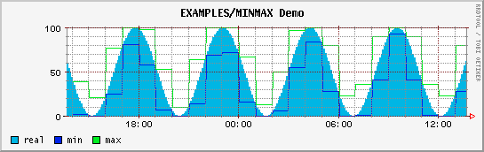
It's quite straightforward to create JRobin Java version of this code:
import org.jrobin.core.*;
import org.jrobin.graph.*;
import java.io.*;
import java.awt.*;
public class JRobinMinMaxDemo {
public static void main(String[] args) throws RrdException, IOException {
long start = Util.getTime(), end = start + 300 * 300;
String rrdFile = "minmax.rrd", pngFile = "minmax.png";
// create
RrdDef rrdDef = new RrdDef(rrdFile, start - 1, 300);
rrdDef.addDatasource("a", "GAUGE", 600, Double.NaN, Double.NaN);
rrdDef.addArchive("AVERAGE", 0.5, 1, 300);
rrdDef.addArchive("MIN", 0.5, 12, 300);
rrdDef.addArchive("MAX", 0.5, 12, 300);
RrdDb rrdDb = new RrdDb(rrdDef);
// update
for(long t = start; t < end; t += 300) {
Sample sample = rrdDb.createSample(t);
sample.setValue("a", Math.sin(t / 3000.0) * 50 + 50);
sample.update();
}
// graph
RrdGraphDef gDef = new RrdGraphDef();
gDef.setTimePeriod(start, start + 86400);
gDef.setTitle("RRDTool's MINMAX.pl demo");
gDef.setTimeAxisLabel("time");
gDef.datasource("a", rrdFile, "a", "AVERAGE");
gDef.datasource("b", rrdFile, "a", "MIN");
gDef.datasource("c", rrdFile, "a", "MAX");
gDef.area("a", Color.decode("0xb6e4"), "real");
gDef.line("b", Color.decode("0x22e9"), "min");
gDef.line("c", Color.decode("0xee22"), "max");
RrdGraph graph = new RrdGraph(gDef);
graph.saveAsPNG(pngFile, 450, 0);
}
}
This code produced the following graph:
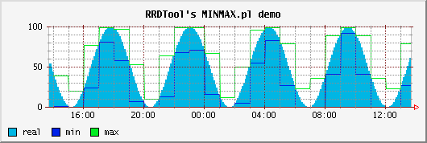
These two graphs are equivalent and it's a matter of taste which one looks better.
Further checks
I like Alex van den Bogaerdt's fine RRDTool tutorial. It comes with many explanations and examples - it's a good starting point for JRobin users too. My intention was to make JRobin to be as functional as RRDTool, so I wanted to check all examples from the tutorial against JRobin and RRDTool at the same time and compare the results.
Database creation
RrdTool command:
rrdtool create test.rrd \
--start 920804400 \
DS:speed:COUNTER:600:U:U \
RRA:AVERAGE:0.5:1:24 \
RRA:AVERAGE:0.5:6:10
Equivalent JRobin Java code:
RrdDef rrdDef = new RrdDef("test.rrd");
rrdDef.setStartTime(920804400L);
rrdDef.addDatasource("speed", "COUNTER", 600, Double.NaN, Double.NaN);
rrdDef.addArchive("AVERAGE", 0.5, 1, 24);
rrdDef.addArchive("AVERAGE", 0.5, 6, 10);
RrdDb rrdDb = new RrdDb(rrdDef);
rrdDb.close();
Still nothing to compare except file sizes (JRobin RRD files are slightly smaller in most cases).
Updating RRD file
RRDTool commands:
rrdtool update test.rrd 920804700:12345 920805000:12357 920805300:12363 rrdtool update test.rrd 920805600:12363 920805900:12363 920806200:12373 rrdtool update test.rrd 920806500:12383 920806800:12393 920807100:12399 rrdtool update test.rrd 920807400:12405 920807700:12411 920808000:12415 rrdtool update test.rrd 920808300:12420 920808600:12422 920808900:12423
JRobin Java code:
RrdDb rrdDb = new RrdDb("test.rrd");
Sample sample = rrdDb.createSample();
sample.setAndUpdate("920804700:12345");
sample.setAndUpdate("920805000:12357");
sample.setAndUpdate("920805300:12363");
sample.setAndUpdate("920805600:12363");
sample.setAndUpdate("920805900:12363");
sample.setAndUpdate("920806200:12373");
sample.setAndUpdate("920806500:12383");
sample.setAndUpdate("920806800:12393");
sample.setAndUpdate("920807100:12399");
sample.setAndUpdate("920807400:12405");
sample.setAndUpdate("920807700:12411");
sample.setAndUpdate("920808000:12415");
sample.setAndUpdate("920808300:12420");
sample.setAndUpdate("920808600:12422");
sample.setAndUpdate("920808900:12423");
Again, nothing to compare... just note that JRobin RRD file keeps the same size regardless of the number of RRD updates (as RRDTool file does).
Fetching data from RRD file
RRDTool commands:
rrdtool fetch test.rrd AVERAGE --start 920804400 --end 920809200
...produced exactly the same output as the following JRobin Java code:
RrdDb rrd = new RrdDb("test.rrd");
FetchRequest request = rrd.createFetchRequest("AVERAGE", 920804400L, 920809200L);
FetchPoint[] points = request.fetch();
for(int i = 0; i < points.length; i++) {
System.out.println(points[i].dump());
}
Graph #1
RRDTool command:
rrdtool graph speed.gif \
--start 920804400 --end 920808000 \
DEF:myspeed=test.rrd:speed:AVERAGE \
LINE2:myspeed#FF0000
...created the following graph:
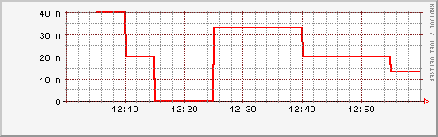
JRobin Java code:
RrdGraphDef graphDef = new RrdGraphDef();
graphDef.setTimePeriod(920804400L, 920808000L);
graphDef.datasource("myspeed", "test.rrd", "speed", "AVERAGE");
graphDef.line("myspeed", Color.RED, "speed", 2);
RrdGraph graph = new RrdGraph(graphDef);
graph.saveAsPNG("test1.png", 400, 100);
...produced the following graph:
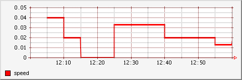
Graph #2
RRDTool command:
rrdtool graph speed2.gif \
--start 920804400 --end 920808000 \
--vertical-label m/s \
DEF:myspeed=test.rrd:speed:AVERAGE \
CDEF:realspeed=myspeed,1000,* \
LINE2:realspeed#FF0000
...created the following graph:
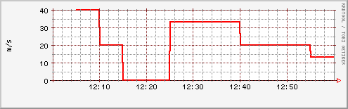
JRobin Java code:
RrdGraphDef graphDef = new RrdGraphDef();
graphDef.setTimePeriod(920804400L, 920808000L);
graphDef.setValueAxisLabel("m/s");
graphDef.datasource("myspeed", "test.rrd", "speed", "AVERAGE");
graphDef.datasource("realspeed", "myspeed,1000,*");
graphDef.line("realspeed", Color.RED, "speed", 2);
RrdGraph graph = new RrdGraph(graphDef);
graph.saveAsPNG("test2.png", 400, 100);
...produced the following graph:
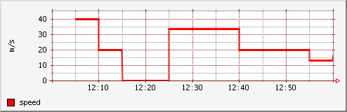
Graph #3
RRDTool command:
rrdtool graph speed3.gif \
--start 920804400 --end 920808000 \
--vertical-label km/h \
DEF:myspeed=test.rrd:speed:AVERAGE \
CDEF:kmh=myspeed,3600,* \
CDEF:fast=kmh,100,GT,kmh,0,IF \
CDEF:good=kmh,100,GT,0,kmh,IF \
HRULE:100#0000FF:"Maximum allowed" \
AREA:good#00FF00:"Good speed" \
AREA:fast#FF0000:"Too fast"
...created the following graph:

JRobin Java code:
RrdGraphDef graphDef = new RrdGraphDef();
graphDef.setTimePeriod(920804400L, 920808000L);
graphDef.setValueAxisLabel("km/h");
graphDef.datasource("myspeed", "test.rrd", "speed", "AVERAGE");
graphDef.datasource("kmh", "myspeed,3600,*");
graphDef.datasource("fast", "kmh,100,GT,kmh,0,IF");
graphDef.datasource("good", "kmh,100,GT,0,kmh,IF");
graphDef.area("good", Color.GREEN, "Good speed");
graphDef.area("fast", Color.RED, "Too fast");
graphDef.rule(100, Color.BLUE, "Maximum allowed");
RrdGraph graph = new RrdGraph(graphDef);graph.saveAsPNG("test3.png", 400, 100);
...produced the following graph:
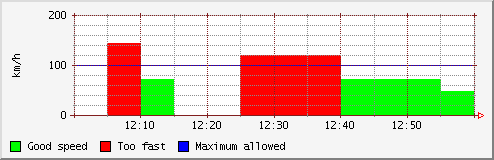
Graph #4
RRDTool command:
rrdtool graph speed4.gif \
--start 920804400 --end 920808000 \
--vertical-label km/h \
DEF:myspeed=test.rrd:speed:AVERAGE \
CDEF:kmh=myspeed,3600,* \
CDEF:fast=kmh,100,GT,100,0,IF \
CDEF:over=kmh,100,GT,kmh,100,-,0,IF \
CDEF:good=kmh,100,GT,0,kmh,IF \
HRULE:100#0000FF:"Maximum allowed" \
AREA:good#00FF00:"Good speed" \
AREA:fast#550000:"Too fast" \
STACK:over#FF0000:"Over speed"
...created the following graph:
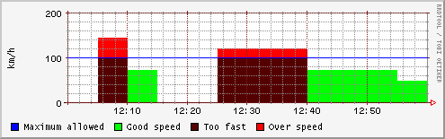
JRobin Java code:
RrdGraphDef graphDef = new RrdGraphDef();
graphDef.setTimePeriod(920804400L, 920808000L);
graphDef.setValueAxisLabel("km/h");
graphDef.datasource("myspeed", "test.rrd", "speed", "AVERAGE");
graphDef.datasource("kmh", "myspeed,3600,*");
graphDef.datasource("fast", "kmh,100,GT,100,0,IF");
graphDef.datasource("over", "kmh,100,GT,kmh,100,-,0,IF");
graphDef.datasource("good", "kmh,100,GT,0,kmh,IF");
graphDef.area("good", Color.GREEN, "Good speed");
graphDef.area("fast", new Color(0x55, 0, 0), "Too fast");
graphDef.stack("over", Color.RED, "Over speed");
graphDef.rule(100, Color.BLUE, "Maximum allowed");
RrdGraph graph = new RrdGraph(graphDef);
graph.saveAsPNG("test4.png", 400, 100);
...produced the following graph:

Graph #5
RRDTool command:
rrdtool create all.rrd --start 978300900 \
DS:a:COUNTER:600:U:U \
DS:b:GAUGE:600:U:U \
DS:c:DERIVE:600:U:U \
DS:d:ABSOLUTE:600:U:U \
RRA:AVERAGE:0.5:1:10
rrdtool update all.rrd \
978301200:300:1:600:300 \
978301500:600:3:1200:600 \
978301800:900:5:1800:900 \
978302100:1200:3:2400:1200 \
978302400:1500:1:2400:1500 \
978302700:1800:2:1800:1800 \
978303000:2100:4:0:2100 \
978303300:2400:6:600:2400 \
978303600:2700:4:600:2700 \
978303900:3000:2:1200:3000
rrdtool graph all1.gif -s 978300600 -e 978304200 -h 400 \
DEF:linea=all.rrd:a:AVERAGE LINE3:linea#FF0000:"Line A" \
DEF:lineb=all.rrd:b:AVERAGE LINE3:lineb#00FF00:"Line B" \
DEF:linec=all.rrd:c:AVERAGE LINE3:linec#0000FF:"Line C" \
DEF:lined=all.rrd:d:AVERAGE LINE3:lined#000000:"Line D"
...created the following graph:
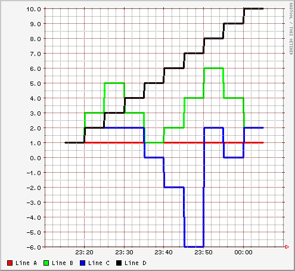
JRobin Java code:
RrdDef rrdDef = new RrdDef("all.rrd");
rrdDef.setStartTime(978300900L);
rrdDef.addDatasource("a", "COUNTER", 600, Double.NaN, Double.NaN);
rrdDef.addDatasource("b", "GAUGE", 600, Double.NaN, Double.NaN);
rrdDef.addDatasource("c", "DERIVE", 600, Double.NaN, Double.NaN);
rrdDef.addDatasource("d", "ABSOLUTE", 600, Double.NaN, Double.NaN);
rrdDef.addArchive("AVERAGE", 0.5, 1, 10);
RrdDb rrdDb = new RrdDb(rrdDef);
Sample sample = rrdDb.createSample();
sample.setAndUpdate("978301200:300:1:600:300");
sample.setAndUpdate("978301500:600:3:1200:600");
sample.setAndUpdate("978301800:900:5:1800:900");
sample.setAndUpdate("978302100:1200:3:2400:1200");
sample.setAndUpdate("978302400:1500:1:2400:1500");
sample.setAndUpdate("978302700:1800:2:1800:1800");
sample.setAndUpdate("978303000:2100:4:0:2100");
sample.setAndUpdate("978303300:2400:6:600:2400");
sample.setAndUpdate("978303600:2700:4:600:2700");
sample.setAndUpdate("978303900:3000:2:1200:3000");
rrdDb.close();
RrdGraphDef graphDef = new RrdGraphDef();
graphDef.setTimePeriod(978300600L, 978304200L);
graphDef.datasource("linea", "all.rrd", "a", "AVERAGE");
graphDef.datasource("lineb", "all.rrd", "b", "AVERAGE");
graphDef.datasource("linec", "all.rrd", "c", "AVERAGE");
graphDef.datasource("lined", "all.rrd", "d", "AVERAGE");
graphDef.line("linea", Color.RED, "Line A", 3);
graphDef.line("lineb", Color.GREEN, "Line B", 3);
graphDef.line("linec", Color.BLUE, "Line C", 3);
graphDef.line("lined", Color.BLACK, "Line D", 3);
RrdGraph graph = new RrdGraph(graphDef);
graph.saveAsPNG("all1.png", 400, 400);
...produced the following graph:
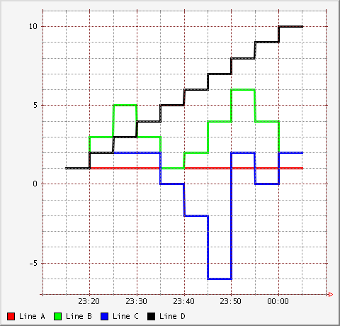
Final checks
So far, so good. All these graphs are identical, but this does not prove anything because the scripts are too simple. More complex checks were needed. So, I developed JRobin MRTG, Java application for Internet traffic load monitoring, in two different versions. The first version used RRDTool to store traffic data (through Runtime.exec() calls) and the second version used JRobin API (pure java solution). Here is the graph from the first (RRDTool) application version:
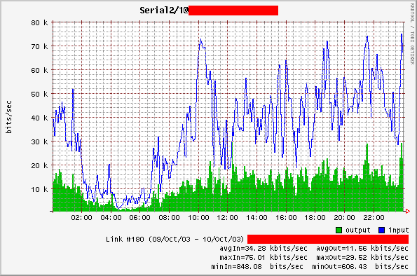
(sensitive information removed)
and here is the graph from the second (JRobin, pure Java) version:
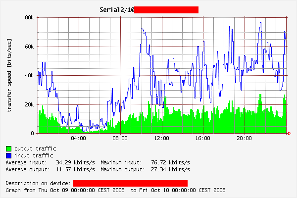
(sensitive information removed)
These graphs look the same but printed values are slightly different due to different sampling intervals (in RRDTool version - 4 minutes, JRobin version - 5 minutes). That's the reason why RRDTool managed to create graph with finer details (more data sampled) and with more accurate maximum values. Average values are also slightly different due to small differences in the AVERAGE calculation algorithm in JRobin and RRDTool.
Known differencies
Suppose that we monitor the rate of change of water level in some nearby tank. Here are the results:
timestamp | water height (meters) =================================== 1000000000 | 1.1 1000000100 | 1.2 1000000200 | 1.1 1000000300 | 1.2 1000000400 | 1.1 1000000500 | 1.2 1000000600 | 1.1
Let's store this data with RRDTool (obviously, we have to choose DERIVE for the datasource type) and see what rrdfetch returns:
rrdtool create test.rrd --start 999999999 --step 100 \ DS:x:DERIVE:200:U:U RRA:AVERAGE:0.5:1:10 rrdtool update test.rrd 1000000000:1.1 rrdtool update test.rrd 1000000100:1.2 rrdtool update test.rrd 1000000200:1.1 rrdtool update test.rrd 1000000300:1.2 rrdtool update test.rrd 1000000400:1.1 rrdtool update test.rrd 1000000500:1.2 rrdtool update test.rrd 1000000600:1.1 rrdtool fetch test.rrd AVERAGE --start 1000000000 --end 1000000600
And you get:
1000000000: nan 1000000100: 0.0000000000e+00 1000000200: 0.0000000000e+00 1000000300: 0.0000000000e+00 1000000400: 0.0000000000e+00 1000000500: 0.0000000000e+00 1000000600: 0.0000000000e+00
This is weird (at least in RRDTool 1.0.33, at least in my opinion). RRDTool tells us that the rate of change is always zero (i.e. water level remains constant at all times), but we are quite sure that it changes about 0.001 meters per second!
RRDTool's DERIVE datasource type works with integers only. It's just a COUNTER without rollover phenomenon. In other words, RRDTool is rather useless if you want to measure the rate of change of physical quantities like voltage, mass, even tempearuters like 37.2C.
JRobin could be easily forced to produce the same results by simply rounding datasource input values, but JRobin should be useful whenever you have to deal with your own "water tank" problem.
Here is a simple JRobin demo class which handles the problem correctly:
public class WaterTank {
public static void main(String[] args) throws RrdException, IOException {
RrdDef d = new RrdDef("d:/tmp/test.rrd");
d.addDatasource("x", "DERIVE", 200, Double.NaN, Double.NaN);
d.addArchive("AVERAGE", 0.5, 1, 10);
d.setStartTime(999999999L);
d.setStep(100);
RrdDb db = new RrdDb(d);
Sample sample = db.createSample();
sample.setAndUpdate("1000000000:1.1");
sample.setAndUpdate("1000000100:1.2");
sample.setAndUpdate("1000000200:1.1");
sample.setAndUpdate("1000000300:1.2");
sample.setAndUpdate("1000000400:1.1");
sample.setAndUpdate("1000000500:1.2");
sample.setAndUpdate("1000000600:1.1");
FetchRequest f = db.createFetchRequest("AVERAGE", 1000000000L, 1000000600L);
FetchData dt = f.fetchData();
for(int i = 0; i < dt.getRowCount(); i++) {
System.out.println(dt.getRow(i));
}
db.close();
}
}
...and the output is as expected:
1000000000: NaN 1000000100: +1.0000000000E-03 1000000200: -1.0000000000E-03 1000000300: +1.0000000000E-03 1000000400: -1.0000000000E-03 1000000500: +1.0000000000E-03 1000000600: -1.0000000000E-03
Conclusion
I have tried to make JRobin as simple (or complex) as RRDTool. If you know Java, if you *really* love Java as I do, if you are already familiar with RRDTool, you'll be up&running with JRobin in no time. It's so straightforward to translate RRDTool commands and directives to JRobin method calls that I plan to add a method to translate RRDTool commands to JRobin method calls on the fly. But 'till then, give a chance to JRobin and see what it can do for you.
Copyright © 2003, 2004 Sasa Markovic & Arne Vandamme. All Rights Reserved.